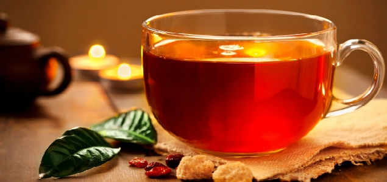

how to make a cup of tea.
we will take a quick look at how to make your fav. cup of tea, in a matter of 5 minutes
ingridents
- tea, your fav. flavor
- sugar/honey, whatever you like
- water
- maybe lemon or menthe
steps
follow these steps carefully
- put some water in boiler, turn it on
- wait for 5 minutes, during that go to step 3
- put some sugar in your cup, you can add menthe ior lemon if you like them
- turn the boiler off
- pour boiled water in the cup, move it for a while
- add menthe or lemon to the cup
- voila!  and bon appetit